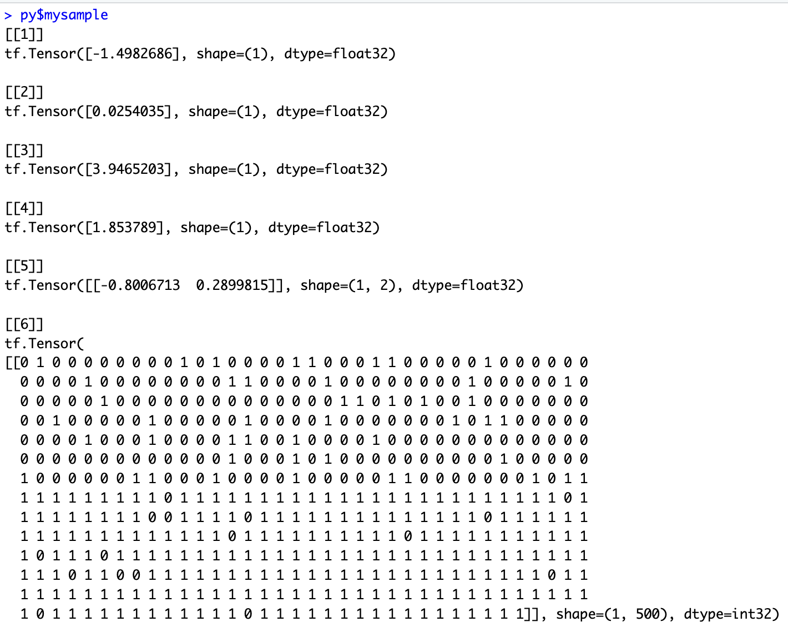

TFP Basics - simple model building
intro_to_tfp.RmdOverview
This vignette shows some of the key building blocks in building a Bayesian model in TFP. It uses a mixture of R and Python.
R is used for data set creation and generation of figures, and Python for model building in TFP. This is a general theme of the vignettes; Python is used when direct interaction with the TFP API is needed, otherwise R is used as the assumed go-to language of choice for statisticians.
Make data available to TFP models
Assuming the data to be modelled, i.e. the source data from which
parameters are to be estimates via model fitting, are loaded into R or
generated in R then a first step is to make these data available to TFP.
This functionality is readily provided by reticulate, with one
watchout - the Python pandas library is required to deal
with data.frames (see installation instructions - pandas can be included
as part of Rstudio’s tfprobability install script).
In TF and TPF models are written in Python but they use TF tensors as arguments, rather than more familiar Python structures such as numpy arrays. This distinction is important as tensors are strongly typed and so care is needed, including when moving back and forth to R via reticulate.
Example data set
The R chunk below creates a simple dataset of three cols:
- a binary response variable (0/1 = non-responder/responder),
- a binary treatment variable (0/1 = control/test treatment)
- and a basket ID variable. (1)
The basket ID is currently set fixed 1, denoting there is only one basket in this trial, i.e. a classical two arm randomized trial design. Baskets will be added in other vignettes.
### Prepare model inputs
set.seed(9999)
# Set up data
rr_k_ctrl <- c(0.60) # control response rate for each basket
rr_k_trt <- c(0.58) # treatment response rate for each basket
K<-length(rr_k_ctrl) # number of baskets
N_k_ctrl <- rep(250, K) # number of control participants per basket
N_k_trt <- rep(250, K) # number of treatment participants per basket
N_k <- N_k_ctrl + N_k_trt # number of participants per basket (both arms combined)
N <- sum(N_k) # total sample size
k_vec <- rep(1:K, N_k) # N x 1 vector of basket indicators (1 to K)
z_vec<-NULL;
y<-NULL;
for(i in 1:K){ # for each basket repeat 0-control 1-trt according to the specifc Ns
z_vec<-c(z_vec,rep(0:1,c(N_k_ctrl[i],N_k_trt[i]))) # treatment/control indicator
y<-c(y,
c(rbinom(N_k_ctrl[i],1,rr_k_ctrl[i]), # bernoulli for control
rbinom(N_k_trt[i],1,rr_k_trt[i]))) # for trt
}
thedata<-data.frame(y,basketID=k_vec,Treatment=z_vec)
py$thedata<-r_to_py(thedata) # THE KEY LINE - makes data available to Python
# this is converted into a pandas dataframe object in Python| y | basketID | Treatment |
|---|---|---|
| 0 | 1 | 0 |
| 0 | 1 | 0 |
| 0 | 1 | 0 |
| 1 | 1 | 0 |
| 0 | 1 | 0 |
| 0 | 1 | 0 |
Python setup and data set management
We first load in the necessary libraries for TFP and then convert the dataset passed from R into tensors. Note that as tensors are strongly typed we explicitly define the storage type.
import numpy as np
import pandas as pd
import os
import keras
import tensorflow as tf
import tensorflow_probability as tfp
from tensorflow_probability import distributions as tfd
tfb = tfp.bijectors
import warnings
import time
import sys
## The data.frame passed is now a panda df but for TPF this needs to be further
## converted into tensors here we simply convert each col of the data.frame into
## a Rank 1 tensor (i.e. a vector)
y_data=tf.convert_to_tensor(thedata.iloc[:,0], dtype = tf.float32)
k_vec=tf.convert_to_tensor(thedata.iloc[:,1], dtype = tf.float32)
z_vec=tf.convert_to_tensor(thedata.iloc[:,2], dtype = tf.float32)
#print(f"y={z_vec}")Define the Probability Model
We now fully define our model, i.e., the data likelihood and all the
prior densities, and we use a function called
JointDistributionSequentialAutoBatched. The are a number of
alternatives TFP function for defining Bayesian models. This is one of
the simplest but still capable of defining complex models. The model
definition in JointDistributionSequentialAutoBatched must
follow a strict convention which is explained in the comments in the
code chunk.
The model formulation here uses a non-centered approach to aim with MCMC estimation as discussed in the stan manual here
# DATA LIKELIHOOD - defined as a separate function which is passed to
# JointDistributionSequentialAutoBatched
# NOTE: the arguments passed are in the REVERSE ORDER from the sequence that these parameters
# are defined in the subsequent JointDistributionSequentialAutoBatched. This reverse ordering
# is essential.
def make_observed_dist(log_odd_control_and_ratio,sigma1, mu1,sigma0,mu0):
# beta is a two element tensor, beta[0] parameter for the log odds of the control arm effect
# beta[1] log odds ratio of treatment to control
beta=tf.stack([mu0 + sigma0 * log_odd_control_and_ratio[0],
mu1 + sigma1 * log_odd_control_and_ratio[1]]) #tf.stack is used to concat tensors
# return a vector of Bernoulli probabilities, one for each patient, and these estimates
# dependent on which arm the patient was randomized to.
return(tfd.Independent(
tfd.Bernoulli(logits=beta[0]+beta[1]*z_vec), #
reinterpreted_batch_ndims = 1 # This tells TFP that log_prob here is a single value
# equal to sum of individual log_probs, a vector
# technically moves tensor batch dimension into event dimension
))
# DEFINE FULL MODEL - NOTE, uses
# model is y[i] = Bernoulli(p[i]) where logit(p[i]) = intercept + treatment*z[i]
model = tfd.JointDistributionSequentialAutoBatched([
tfd.Normal(loc=0., scale=2.5, name="mu0"), # prior for mean of control arm log odds
tfd.HalfNormal(scale=2.5, name="sigma0"), # prior for sd of control arm log odds
tfd.Normal(loc=0., scale=2.5, name="mu1"), # prior for mean of treatment log odds ratio
tfd.HalfNormal(scale=2.5, name="sigma1"), # prior for sd of treatment log odds ratio
tfd.Normal(loc=tf.zeros(2), scale=tf.ones(2), name="log_odd_control_and_ratio"), ## indep norms
# a vector, due to the non-centered parameterization
make_observed_dist # the data likelihood defined as a function above
])
# Sample one variate from this joint probability model - simply to show what structure the model
# produces/needs. i.e. what the state variable of the model looks like in TF
mysample=model.sample(1)
print(py$mysample)